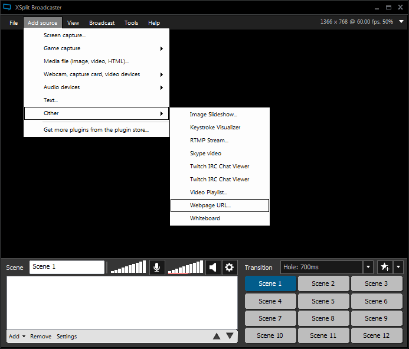
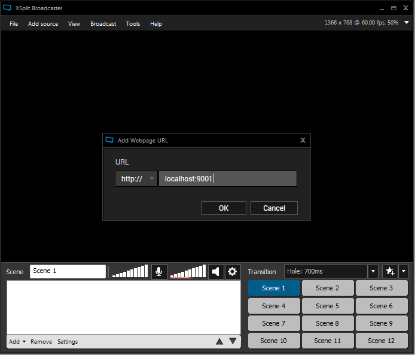
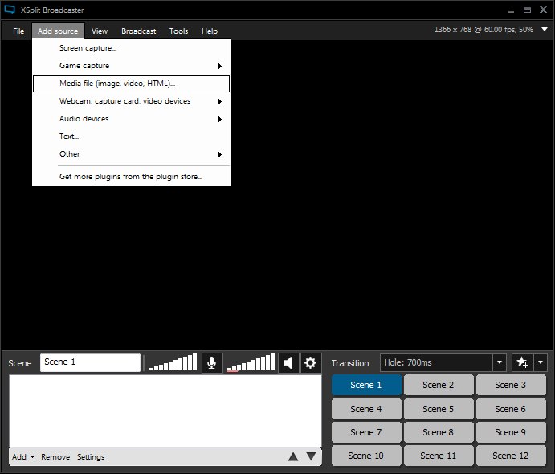
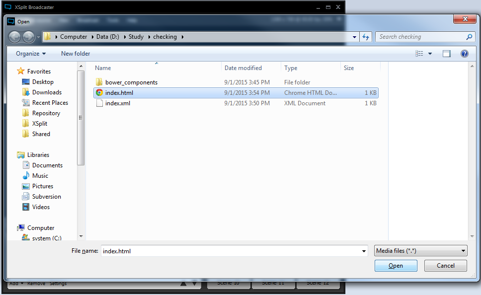

Plugins are important tools for extending the functionality of XSplit Broadcaster. In order to allow developers to create useful plugins for the community, we created the XSplit JS Framework to encapsulate the capabilities of the application in an easy-to-understand manner.
We will walk you through on how to get started building your own XSplit Broadcaster plugin using this framework and the tools that we made along with it.
You will need the latest developer build of XSplit Broadcaster to use the XSplit JS Framework.
We recommend using Yeoman to create your first plugin, but also outlined below are alternative methods to get development started. Please note that you will need working knowledge of JavaScript and ES6 Promises to use the framework.
You'll need to have Node.js and npm installed first. If you have that installed already, great! If not, you should go to the official website, download and install it. Also, do make sure that you have the latest version of npm to avoid issues with other tools. Finally, you will need Git on your machine.
Let's get started first with installing yeoman and XSplit JS Framework generator through npm.
npm install -g bower
npm install -g yo
npm install -g generator-xjs
That will allow you to generate XSplit JS Framework based projects through the command yo xjs.
To use our generator, you'll have to create your project folder, and then scaffold your project in there:
mkdir YOUR_DIR
cd YOUR_DIR
yo xjsYou will be prompted with a number of options like project name, version, plugin type, and package name.
That should create the basic structure for your plugin, including a generic HTML file you can use to get started. The directory should now also include the file xjs.js, which contains the framework code. We also included browsersync for you to test your plugin on a browser first; all you have to do is execute gulp in the root folder of your project.
Our Yeoman Generator also makes use of bower, but the generator simply executes it automatically. In this section, we assume that you hate automation, and that you would love to use bower by yourself for whatever reason.
To use bower, install it first, and then fetch xjs-framework through bower.
npm install -g bower
bower install xjs-framework
This creates a bower_components folder. The relevant file is bower_components/xjs-framework/dist/xjs.js, which you should include in your plugin's HTML file. All other details of the project structure are up to you. See the following example for what a basic plugin might look like.
<html>
<body>
<script src="bower_components/xjs-framework/dist/xjs.js"></script>
<script src="js/main.js"></script>
</body>
</html>
For plugin publishing, you will also need to create an XML file—this is actually automatically generated for you if you used Yeoman! (Please note that as of time of writing, the details regarding the plugin store and plugin publishing methodology are still being worked out.) The following is the XML you will need; simply replace the values in the <Name> and <ProperName> nodes with your desired plugin name.
<?xml version="1.0"?>
<config xmlns:xsi="http://www.w3.org/2001/XMLSchema-instance" xmlns:xsd="http://www.w3.org/2001/XMLSchema">
<CanPause>false</CanPause>
<CanPlay>false</CanPlay>
<CanSetVolume>false</CanSetVolume>
<CanStepBackward>false</CanStepBackward>
<CanStepForward>false</CanStepForward>
<CanStop>false</CanStop>
<Description />
<HelpLink />
<HelpText />
<Name>test</Name>
<param name="flashvars" value="" />
<ProperName>test</ProperName>
<Category></Category>
<ShowConfigOnAdd>false</ShowConfigOnAdd>
<MinCompatibleVersion>2.3.1505.0516</MinCompatibleVersion>
<MinFxVersion>2.3.1505.0516</MinFxVersion>
<Version>0.1.0</Version>
</config>Usage of NPM is similar to using Bower to fetch the XSplit JS Framework.
At this point, we already have npm installed. Just execute this in your CLI:
npm install xjs-framework
This would create a node_modules folder. The relevant file is node_modules/xjs-framework/dist/xjs.js, which you should include in your plugin's HTML file. All other details of the project structure are up to you. Sample usage can be seen in the sample plugin code below.
This approach also opens up an alternative coding method. You can create your plugins using TypeScript or ES6 due to the availability of the package.json file and the source code written in TypeScript. To learn more, see our tutorials.
In case you hate modern methods, you could always use the dinasour aged approach by downloading our framework as a ZIP file. Please click the button below to download it.
When you download XSplit JS Framework as a ZIP file, you would get the initial structure of a Source Plugin along the xjs file located under bower_components folder.
In case you need to automatically update the framework to the latest available version, you could always execute bower update on your CLI.
In case you need to create a plugin fast, and just want to use our hosted version of XJS Framework, all you have to do is add this line to your html file:
<script src="https://cdn2.xsplit.com/xjs/download/xjs.js"></script>The problem with this method is that our servers cache static files, thus we cannot ensure that the file hosted is the latest version of the framework, specially if we just released a new version of the framework within the past 24 hours.
Let's try making a source plugin that would display all the items loaded on the current scene. So let's open up main.js, and write the following code:
var xjs = require('xjs');
xjs.ready().then(xjs.Scene.getActiveScene)
.then(function(scene) {
return scene.getItems();
}).then(function(items) {
var p;
for (var i in items) {
items[i].getName().then(function(name) {
p = document.createElement('p');
p.textContent = name;
document.body.appendChild(p);
});
}
});Let's dissect the sample code above.
* We're assuming that you are knowledgeable with Promises in JavaScript. If you are not, please do check it out on MDN or other articles about Promise programming.
The first line of the code loads the framework and save it to the xjs variable. We then accessed the framework's ready() method; a method that returns a promise, which will resolve when XSplit JS Framework is ready to use. Always make sure to do your development when the framework is ready!
xjs.ready().then(xjs.Scene.getActiveScene)
XSplit Broadcaster exposes a number of scenes to the user. getActiveScene will resolve with the current/active scene's Scene object as the first parameter. This Scene object has a method named getItems which will eventually resolve with an array of Item instances, each referring to a source placed on the current scene.
.then(function(scene) {
return scene.getItems();
})
Each of the items is an instance of Item or a subclass thereof. However, all types of Item instances have common methods, which includes the getName method. getName returns a Promise which will resolve with a string as the parameter. That string is the name of the item/source, which is what this plugin wants to print back to the DOM.
.then(function(items) {
var p;
for (var i in items) {
items[i].getName().then(function(name) {
p = document.createElement('p');
p.textContent = name;
document.body.appendChild(p);
});
}
})For more in-depth information, please do check out our API, or our tutorials for articles on achieving certain tasks using the framework.
For now, let's update the CSS file located on the css folder, and set the background to white.
body {
background: #FFF;
}
To test our plugin, we could run gulp on your project root. (Note: this will only work if you scaffolded your project using our generator! You may host your HTML locally otherwise.) This should create a temporary dev server that would host your plugin, which you can access at http://localhost:9001. This method has the added advantage of automatically refreshing your plugin in XSplit when changes are detected inside your code.
Now open up your XSplit Broadcaster, log-in, and add a web URL source with the URL set to http://localhost:9001.
 
That should add your plugin to the stage, and it should list all items placed in the active scene.
If you manually created your plugin project, you can simply drag the index.html file to the stage. That should work. Or, you add it as a media file:
 
For more information or guides, please do check out our tutorials.
Here are a couple of sample plugins that showcases what you can actually do using XSplit JS Framework. You could check out the source codes to get a better understanding on how the plugin works.
This plugin demonstrates what you can do on Extension plugins. The Scene Rotator plugin would automatically switch to the specified scenes after the given interval. Please do check out the source code at github.
This plugin demonstrates what you can do on Source plugins, specifically on how source plugins modify other item sources' properties. The Source Toggler plugin would allow the user to attach two other sources and then modify its position and rotation properties. Please do check out the source code at github.
This plugin demonstrates a different take on doing plugins. This involves injecting custom javascript and css to style and add configurability to an already existing webpage. Please do check out the source code at github.